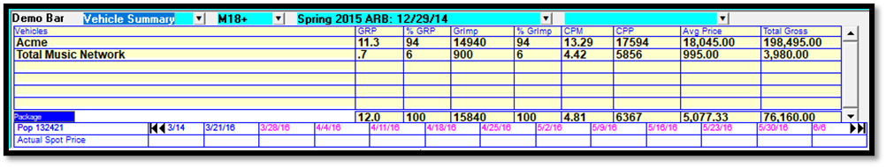

Demo Bar
The Demo Bar is used to view audience data and avails for a proposal, using the selected demographic category and research books. The Demo Bar can be used when creating or editing a proposal to ensure that it meets the target audience.
To access the Demo Bar, from the Air Time tab, select a line and click the “Show Demo Bar button”. The Demo Bar appears over the Contract Header area, as shown in the picture below.
To close the Demo Bar at any time, press the “Hide Demo Bar” button.
There are six different views available on the Demo Bar: Line Totals, Line Summary, Week Summary, Quarter Summary, Vehicle Summary, and Daypart Summary. On each view, the Demo Category, Research Book, and Qualitative Research category, can be selected from the top part of the Demo Bar.
Line Totals View
The Line Totals view shows detailed information about the selected line, and can be used to edit the spot counts and spot prices.
Line, Vehicle/Package, Proposal Total: this row shows the line CPP or CPM (click the toggle to change it), the line GRP/Grimp, what percent of the total GRP/Grimp the line makes up, and the total line gross. In the next section, the vehicle or package (when a hidden line is selected) and contract total CPP/CPM, GRP/Grimp, and Total Gross is also shown.
Population: displays the population for the selected demo category and research book.
Weeks: thirteen weeks are shown, and you can advance the dates or go back by clicking the black arrows.
Spot Count: the current spot counts are shown. The spot count field can be clicked in for each individual week to change the spot.
Avails: to see avails, on version 7.0 and prior, click the “Avails” button in the top right corner. You must click on the Avails Button for each quarter you wish to see avails for. On version 7.1 and above, the Avails button has been changed to a blue toggle button and placed under the Spot Count field on the Line Totals view, where the "Avails" label was previously placed. This toggle has the following options: "Avails: None", “Avails: # [spot length]; "Avails: 30/60", and "Avails: 10s only". The “Avails: # [spot length]” option calculates the avail count by counting the number of spots that could book into the remaining avails without moving any spots, for the spot length of the selected line. This adds the ability to see the avails for non-30/60 spot lengths. The "Avails 30/60" works the way the Avails button works on version prior to v7.1, in that it shows available inventory for the selected line spot length. The "Avails: 10s" option can only be switched to when the selected line has a 10 second spot length, and then the available inventory will be shown for any breaks that are ten seconds long.
Actual Spot Price: the current spot price is shown. This is also an editable field.
Rate Card Price: the rate card price is shown for information purposes only and cannot be edited in this row.
Index: the actual spot price can be scaled using an index value by typing the index value into the index row for the corresponding week, and pressing Tab. Alternatively, the actual spot price can be changed by an index value for the displayed thirteen weeks by typing an index value into the “Indx” field. When set to the “Actual/Rate Card” toggle, the actual spot price will be set to the rate card price multiplied by the entered index value. When set to the “New Actual/Actual” toggle, the new actual spot price will be set to the current actual spot price multiplied by the index value.
Rating, Audience, GRP, Grimp: the rating and audience is displayed, along with the GRP and Grimp per week.
Line Summary View
The Line Summary view is a summary of each contract line, with the line number, vehicle, daypart, GRP, %GRP, Grimp, %Grimp, CPM, CPP, average price, and total gross shown for each line.
When set to the “Hidden” toggle, the hidden lines and conventional lines are shown. When set to the “Package” toggle, the packages and conventional lines are shown.
The Summary views show one quarter of data along the bottom row, where the actual spot price can also be edited for the selected contract line.
Week Summary View
The Week Summary summarizes the GRP, %GRP, Grimp, %Grimp, CPM, CPP, Average Price, and Total Gross for each contract week.
Quarter Summary View
The Quarter Summary view is similar to the Week summary but with the contract summarized by standard broadcast quarter.
Vehicle Summary View
The Vehicle Summary can be toggled between the Package view, which summarizes the data by vehicle for all packages and conventional lines, and the Hidden view, which summarizes the data for all hidden and conventional lines (by pressing the blue toggle at the bottom of the Demo Bar).

Daypart Summary View
The Daypart Summary view includes totals for each daypart ordered on the contract. If multiple vehicles are using the same daypart, the totals for the multiple vehicles will be combined.
This view can also be toggled between the package view and the hidden line view.
Daypart Group View
The Daypart Group view shows the daypart groups (as defined on the Rate Card daypart screen) from the contract, with research numbers calculated by daypart group, similar to how the daypart summary view works. The daypart groups are sorted by daypart group sort order number. After the daypart groups are any dayparts on the contract that are not part of a daypart group, with those non-daypart group dayparts sorted alphabetically.
Printing Demo Bar Information
Any of the summary views can be printed or saved as a PDF file by clicking the Summary button (printer icon) in the upper right corner of the Proposal Screen.